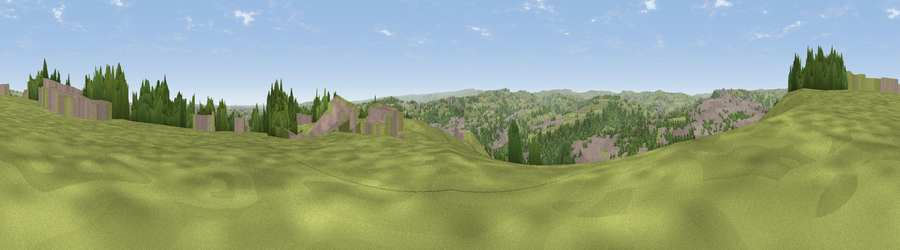

Viewpoint near Southowram
#12711 in England · top 16% of its area beats it · near SouthowramThe view, rendered

A 360° render of this exact spot computed from the terrain model, tree cover and land cover — summer colours, afternoon light, calibrated against photographs of famous viewpoints. Real trees, hedges and buildings will differ in detail.
The panorama
Grey silhouette: terrain skyline in each direction (720 bearings, Earth curvature and refraction included). Dashed green: skyline with trees (+15 m) and buildings (+8 m) as obstacles. Blue strip: how far the ground is visible on each bearing.
Where the view opens
Wedge length = distance to the farthest visible ground on that bearing (vegetation-aware). Rings at 10, 25 and 50 km.
What fills the view
52% grassland · 25% woodland · 21% built-up · 1% cropland
Angular shares of the visible panorama (visual magnitude), not map area. Landscape diversity 0.47 (0–1 Shannon).
Key numbers
More beautiful places nearby
The staircase of upgrades: each row has a higher view potential than everything closer. Driving times are estimates from straight-line distance, calibrated against real road routing — check an actual route before setting out.
| Place | Direction | Drive | Score |
|---|---|---|---|
| Bank Top | NW · 0 km | ~1 min | 62.6 |
| Viewpoint near Stump Cross | NNW · 3 km | ~8 min | 67.8 |
| Viewpoint near Stump Cross | NNW · 4 km | ~10 min | 71.5 |
| Viewpoint near Jackson Bridge | SSE · 18 km | ~31 min | 73.5 |
| Viewpoint near Otley | NNE · 22 km | ~37 min | 77.5 |
| Darwen Hill | W · 43 km | ~63 min | 80.7 |
| White Brow | WSW · 46 km | ~66 min | 82.9 |
| Warton Crag | NW · 78 km | ~102 min | 83.2 |
53.71074, -1.83975 · source: screening · position refined by local search. Computed location — check access rights before visiting.